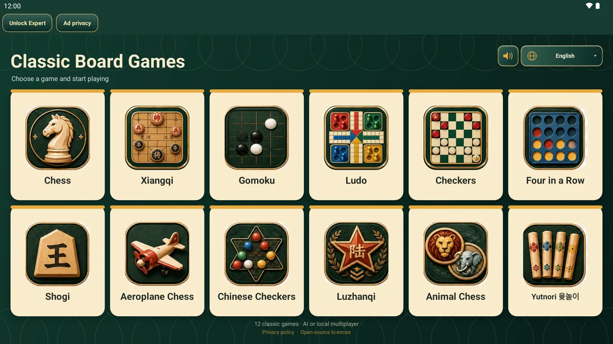
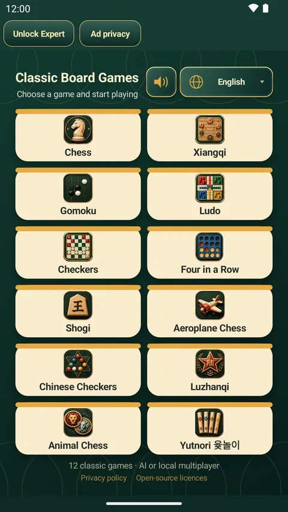
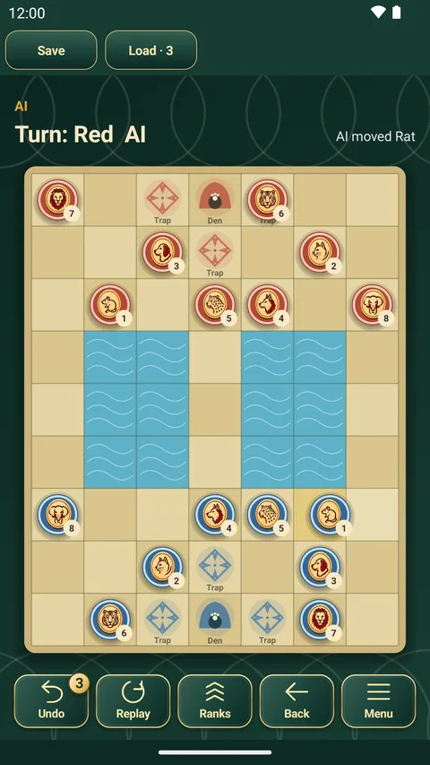
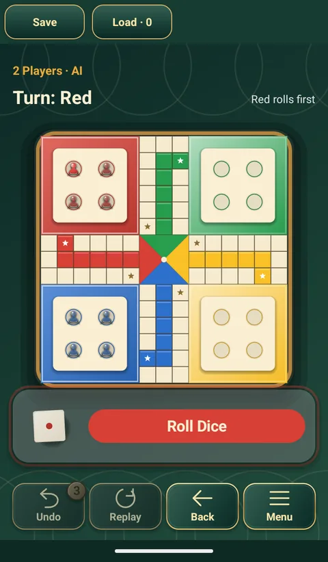

Android 무료 보드게임
보드게임 모음
클래식 보드게임 12종을 하나의 앱에 담았습니다. 윷놀이, 오목, 체스, 중국 장기, 쇼기, 루도 등. 게임과 AI가 모두 기기에서 실행되므로 계정도, 로그인도, 인터넷 연결도 필요 없습니다.
- 게임 12종
- 오프라인 플레이
- AI 3단계
- 한 기기에서 2~6인
- 10개 언어

게임 12종, 앱 하나
모든 게임이 원래 규칙 그대로이며, 3단계 AI 상대와 휴대폰이나 태블릿 한 대로 마주 앉아 즐기는 2인 모드가 있습니다. 게임을 고르면 규칙을 볼 수 있습니다.
 동물 장기
동물 장기 체스
체스 중국 장기
중국 장기 쇼기
쇼기 오목
오목 체커
체커 사목
사목 차이니즈 체커
차이니즈 체커 루잔치
루잔치 루도
루도 비행기 체스
비행기 체스 윷놀이
윷놀이스크린샷
나무 질감의 판, 전통적인 말, 차분한 초록 테이블. 휴대폰과 태블릿 모두 지원합니다.









방해하지 않는 설계
AI 또는 친구와
Easy, Normal, Expert 3단계 AI. 한 기기에서 2인 대전, 루도와 비행기 체스는 최대 4인, 차이니즈 체커는 최대 6인. 모든 자리를 사람 또는 AI로 정할 수 있고 AI끼리 대전도 됩니다.
오프라인, 가입 불필요
게임과 AI가 기기에서 실행됩니다. 계정도 로그인도 없고, 용량이 작고 배터리 소모도 적습니다.
무르기·다시 보기·저장
한 수 무르기, 처음부터 다시 보기, 게임별 저장, 선택형 대국 시계를 지원합니다.
팝업 광고 없음
결과 화면의 작은 배너 하나와, 직접 선택했을 때만 보는 보상형 광고뿐입니다. 한 번만 구매하는 Premium으로 모두 없앨 수 있습니다.
휴대폰과 태블릿
태블릿은 늘린 휴대폰 화면이 아니라 사이드 패널이 있는 전용 레이아웃입니다. 인터페이스 언어는 10개입니다.
자주 묻는 질문
무료인가요?
네. 게임 12종, Easy와 Normal AI, 한 기기 2인 대전은 모두 무료이며 횟수 제한도 없습니다. 짧은 광고를 보면 무르기와 불러오기 횟수가 늘어나고, 한 번만 구매하는 Premium으로 Expert AI 잠금 해제, 무르기·불러오기 무제한, 모든 광고 제거가 적용됩니다. 구독은 없습니다.
오프라인으로 할 수 있나요?
네. 모든 게임과 AI가 휴대폰에서 실행되므로 비행기 안에서도, 지하철에서도, 신호가 없는 곳에서도 할 수 있습니다. 인터넷은 광고와 구매에만 사용됩니다.
휴대폰 한 대로 두 사람이 할 수 있나요?
네. 모든 게임을 한 기기에서 번갈아 가며 할 수 있습니다. 루도와 비행기 체스는 최대 4인, 차이니즈 체커는 최대 6인이며, 모든 자리를 사람 또는 AI로 정할 수 있습니다.
계정이 필요한가요?
아니요. 계정도 로그인도 없습니다.
어떤 언어를 지원하나요?
10개 언어: 한국어, English, 简体中文, 日本語, Tiếng Việt, Bahasa Melayu, ไทย, ລາວ, Español, Deutsch.
어떤 기기에서 실행되나요?
Android 7.0 이상의 휴대폰과 태블릿입니다. 태블릿에서는 사이드 패널이 있는 전용 레이아웃으로 표시됩니다.
한 판 해 볼까요?
Android 휴대폰과 태블릿용, Google Play에서 무료로 받을 수 있습니다.